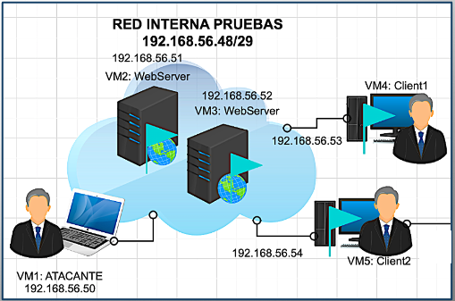

En la dificultad fácil del escenario se pretende conseguir los siguientes conocimientos: Escaneo de redes y servicios, movimientos laterales, localización de ficheros ocultos en el sistema de ficheros de las máquinas virtuales, hacking web, ataques de diccionario y de fuerza bruta, ataques con la herramienta netcat y la explotación de la vulnerabilidad vsftpd 2.3.4 empleando el framework de ataque de metasploit.
En la dificultad media del escenario se pretende conseguir los siguientes conocimientos: Escaneo de redes y servicios, movimientos laterales, localización de ficheros ocultos en el sistema de ficheros de las máquinas virtuales, pivotaje entre redes, ataques de diccionario avanzados, creación de diccionarios personalizados, descifrado de hashes, transformaciones de binario a texto, transformaciones de hexadecimal a texto, ataques a servidores web de wordpress, ataques al servicio ftp, explotación de vulnerabilidades unreal ircd y eternalblue empleando el framework de ataque de metasploit.
En la dificultad avanzada del escenario se pretende conseguir los siguientes conocimientos: Escaneo de redes y servicios, movimientos laterales, localización de ficheros ocultos en el sistema de ficheros de las máquinas virtuales, pivotaje entre redes, ataques de diccionario más complejos, cifrado y descifrado César e implementación y ejecución de un ransomware en el servidor DNS de la infraestructura.